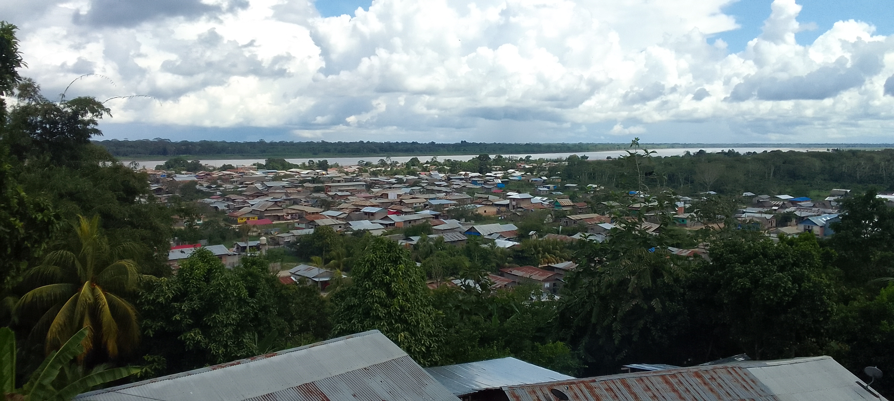
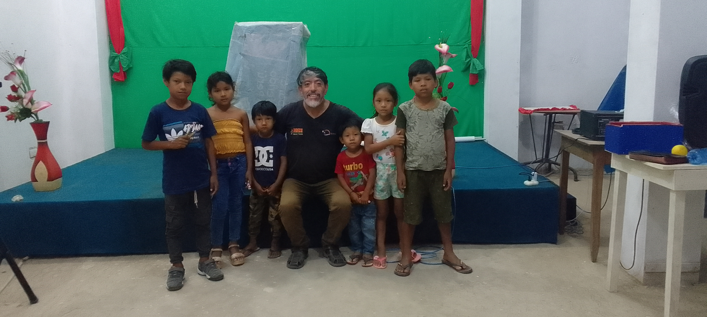
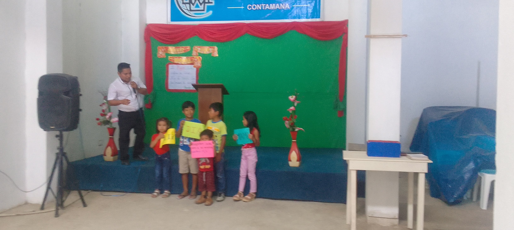
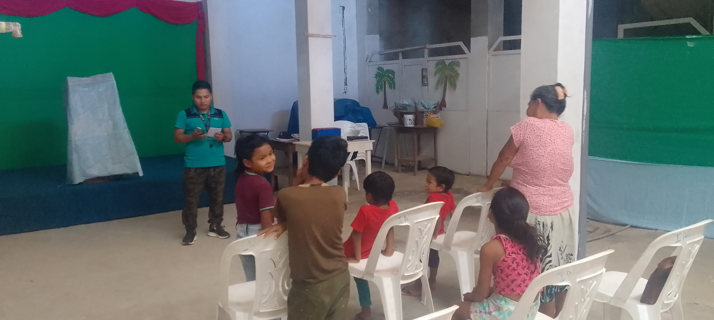
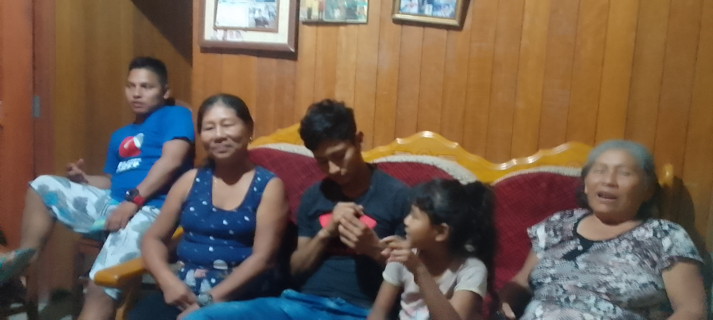

✨ En memoria y gratitud
Un testimonio que perdura en Contamana
Este espacio honra los pasos de fe dados en el Señor Jesús en nuestra hermosa tierra: oraciones en las riberas del Ucayali, el testimonio de siervos que nos precedieron y vidas restauradas.
«Hasta aquí nos ayudó Jehová.» (1 Samuel 7:12)
Momentos Inolvidables

Un día especial en la iglesia

Compartiendo en comunión

Tiempos de búsqueda y oración

Un día lleno de gozo

Caminando juntos en la fe
‹
›
📸 Ver álbum histórico completo de fotos
🔥 Desafío y Compromiso
¡Toma la antorcha en Contamana!
El memorial nos llama a la acción a los creyentes de hoy. Aquí tienes alcances bíblicos de cómo puedes servir a Dios en la congregación:
🌱 ¿Cómo puedes servir al Señor hoy?
1. Guerrero de Oración: Interceder por los enfermos, familias y las orillas del río.2. Sembrador de la Palabra: Compartir el evangelio con vecinos, amigos y caseríos.3. Amigo de los Niños: Apoyar en la enseñanza y discipulado de la niñez y juventud.4. Manos Solidarias: Visitar hogares y brindar consuelo práctico a los necesitados.
Cargando palabra de hoy...
✍️ Escribe tu motivo de oración o compromiso de servicio:
📲 Compartir mi motivo en WhatsApp